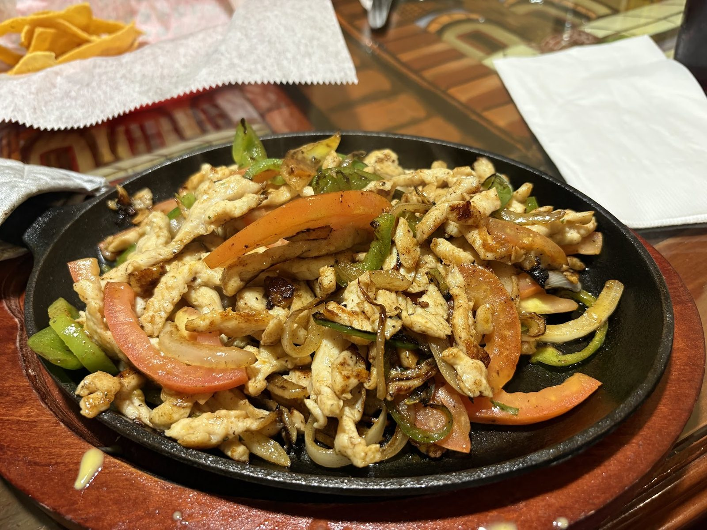

Al pastor street tacos
Corn tortillas with your choice of meat, cilantro and onions. Try the al pastor or the asada.
Mexican kitchen · Kirkwood Ave, Bloomington
Al pastor tacos, the special burrito and sizzling fajitas. Warm tortillas, generous plates.

What people order
Where to start.
Corn tortillas with your choice of meat, cilantro and onions. Try the al pastor or the asada.

Chicken, steak, shrimp or veggie fajitas with sauteed onions, tomatoes and bell peppers, brought out on a hot skillet.

The special burrito with house-made pastor meat, the Burrito Toluca, and plates with rice and beans.


4.7 ★ · 72 Google reviews
Great food and great service. Best restaurant on Kirkwood. Love the outdoor space. Takeout is also quick and delicious! Thanks for another perfect dinner! ❤️
The food was delicious. I loved the Al pastor and asada tacos. Accesible parking & reasonable prices. Our server Joaquin was super nice and kind. Would definitely be coming back
The best Mexican restaurant in town ! Me and my friend go here all the time and they’re always super nice and the food is great, even coming in late they still give the best service pretty cheap food too but delicious 🤤
Nuestra historia
Tacos Al Pastor began as a Bloomington food truck and grew into a permanent home on Kirkwood Avenue. Sugar skull banner out front, outdoor space beside it.
Friendly staff, warm tortillas, generous portions, fair prices and fast takeout.

Ven a vernos
620 W Kirkwood Ave, Bloomington, IN 47404
Accessible parking, an outdoor space and quick takeout.